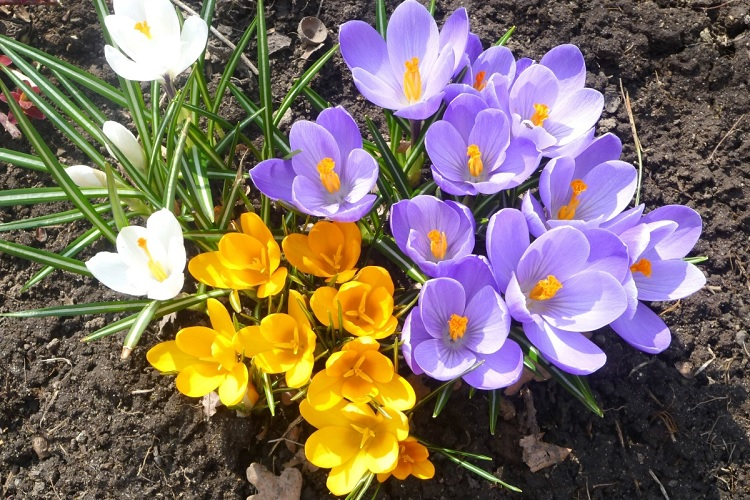
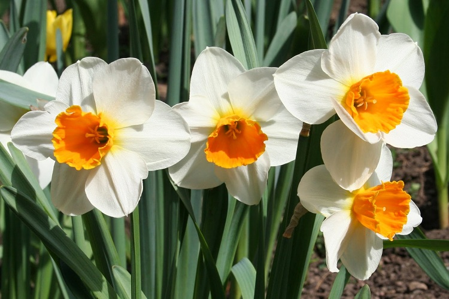

Листай вниз
Крокусы

Крокусы зацветают еще в марте, фото первых распустившихся крокусов пестрят соцсети. Их можно назвать «садовыми подснежниками». Сказочно смотрятся, выглянувшие сквозь снег венцы белоснежной, ярко-синей, фиолетовой расцветки. Цветы небольшие — 8-15 см в длину. Цветут всю весну, образуя яркие пятнышки среди сада камней или альпийских горок.
Мускари
Мускари — самые неприхотливые цветы для дачи, радующее стабильным цветом с апреля по июнь. Это цветок с небольшим стеблем в 15 см, заканчивающийся на конце скоплением маленьких синих колокольчиков. Посадив однажды мускари, можно наблюдать его красоту долгие годы.
Пушкиния
Пушкиния — те самые цветы на даче для ленивых, о которых говорят: «посадили и забыли». Растение высотой около 20 см с листовой, как у ландыша, но круглыми белыми или синими цветочками диаметром 4 см. Пушкиния отлично подходит для декора садовых дорожек и групповой посадки под деревьями.
Нарциссы

Нарциссы, зимуют в земле и появляются словно ниоткуда, преображая участок и даря яркий аромат. Растение высотой от 25 до 55 см цветет наравне с тюльпанами — весной, самый необычный цвет нарцисса — синий. Летом листья теряют свою яркость и жухнут. Поэтому их лучше высаживать рядом с пионами, аквилигией.
Тюльпаны
Тюльпан — луковичное многолетнее растение, которое из всех луковичных является самым неприхотливым. Сорта подбирают в зависимости от нужной высоты: от 10 до 50 см. Тюльпаны цветут дружно с апреля по июнь. Цвета лепестков культуры разнообразны: от обычных алых до махровых черно-белых окрасов.
Барвинок

Барвинок — находка для тех, у кого тенистый участок. Это многолетнее стелящееся растение с синими или пурпурными цветками. Общая высота барвинка около 10 см. Цветущее растение образует на почве яркий зелено-синий ковер с апреля по июнь.
Дицентра
Многолетнее цветущее растение, высотой до метра, прекрасно переносит зимние стужи. Листья отмирают осенью, возрождаясь и расцветая весной кисточками белых и розовых венчиков в форме сердечка. Цветет дицентра весь май и июнь, сочетается с папоротником, примулой и декоративным луком.
Ландыш
Цветущее многолетнее растение имеют ползущие корни, оттого отлично переносят зимовку в грунте. В начале мая показывается из земли свернутый в трубочку длинный кожистый лист, затем ландыш выбрасывает цветонос с интенсивно пахнущими мелкими белыми цветками-колокольчиками, превращающиеся к концу лета в красные ягодки.
Купена
Родом из леса, декоративная купена внешне похожа на ландыш высотой до 85 см. Отличие в более крупных листьях, тонких цветоносах и удлиненных цветках. Цветет купена в мае и июне белыми ароматными зубчатыми колокольчиками. Нежная красота купены не блещет яркостью, но не заменима, как на тенистых местах, так и на альпийских горках.